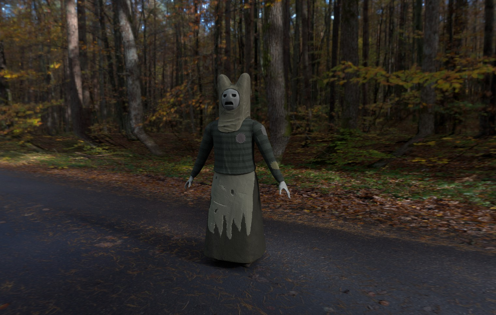
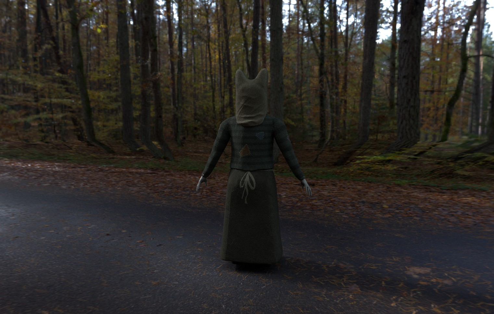
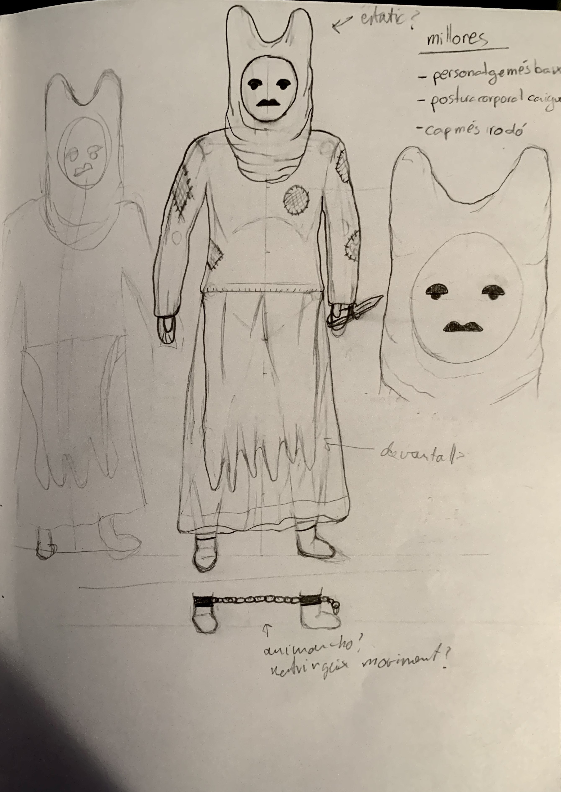
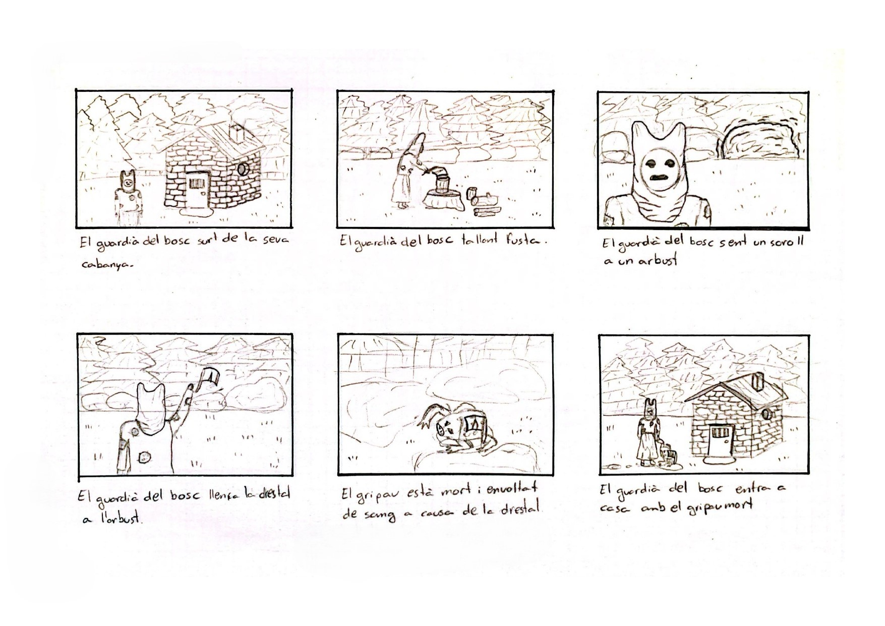
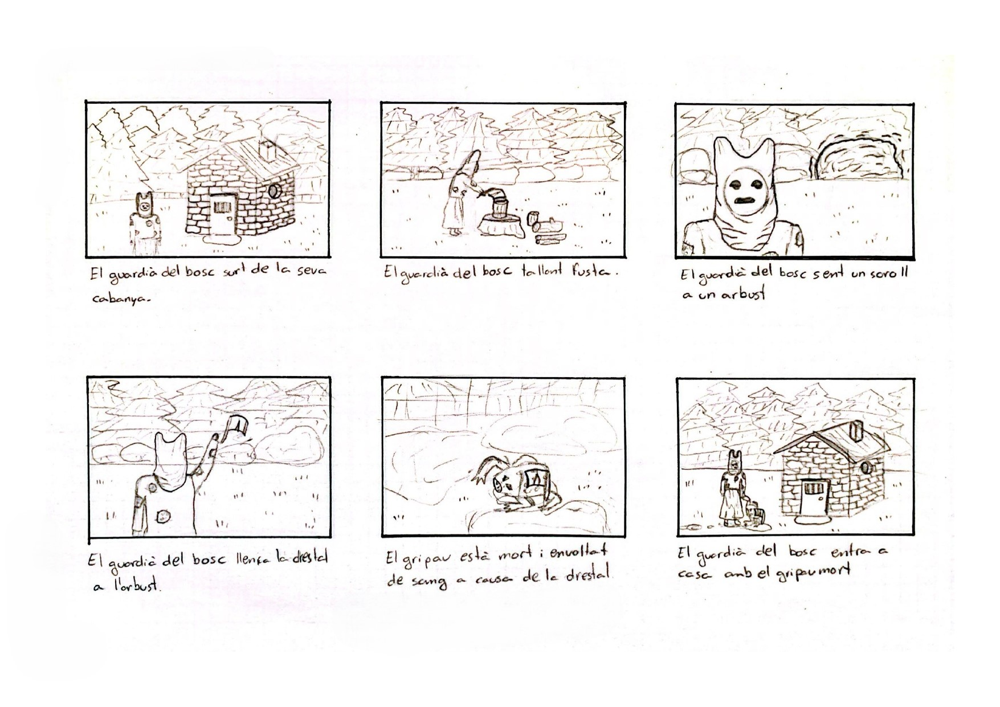
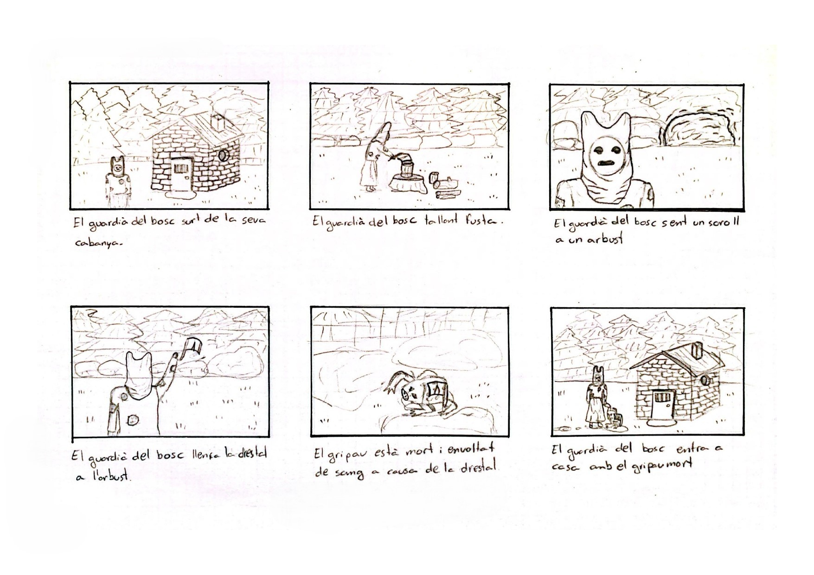

Guardabosc
2023
CC BY-NC-SA 4.0
Modelatge d'un personatge.
La figura d’un Guardabosc és totalment misteriosa, només ells saben el que guarden.
Modelatge i texturització des de zero d’un personatge humanoide amb una tira de vinyetes.
El disseny parteix d’esbossos inicials en paper i exploracions de forma i color, buscant un equilibri entre la presència enigmàtica i una aparença natural, com si fos part del bosc.
El procés va incloure la creació del vestuari i la màscara, així com l'animació de tot el personatge.
Les vinyetes expliquen breument el paper del Guardabosc com a protector dels secrets del bosc, combinant narrativa visual i disseny de personatge.



 

